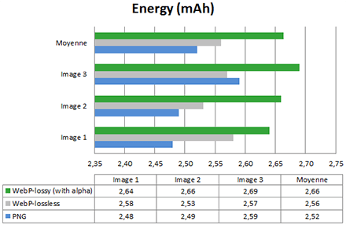
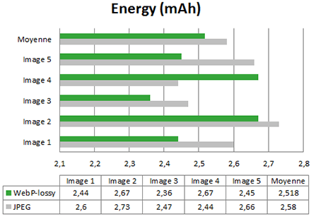
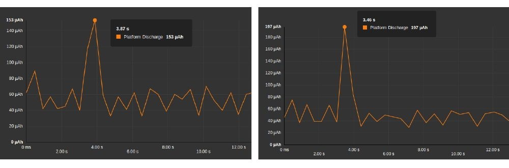

Webp est le nouveau format d’image proposé par Google, qui promet une réduction de 30% à 80% de la taille de transfert. De plus, le format serait plus adapté aux processeurs actuels. Mais qu’en est-il de la consommation d’énergie sur l’appareil de l’utilisateur ?
Le format Webp
Webp est un format matriciel comme le PNG ou le JPEG. Il supporte des compressions sans perte (lossless) comme le PNG mais aussi avec perte (lossy) comme le JPEG.
Ce format est actuellement pris en compte par Chrome, Chrome pour Android, et Opera.
Cependant la controverse vient de la fondation Mozilla qui considère que le format n’offre pas autant d’avantages qu’annoncé.
Au passage, Mozilla travaille de son côté sur une optimisation du JPEG : MozJPEG. Voici un lien pour comprendre comment gérer ces problèmes d’implémentation : Google WebP
Mais qu’en est-il effectivement de l’efficience de ce nouveau format ? La mesure de l’énergie consommée pour afficher ces images va permettre de répondre à cette question !
METHODOLOGIE DE MESURE
Pour cela j’utilise mon outil favori (ce n’est pas une surprise), à savoir le service Power Test Cloud de GREENSPECTOR.
La méthodologie est la suivante :
- La mesure est faite sur un smartphone réel, un Nexus 6, hébergé et géré par GREENSPECTOR ;
- On lance Chrome et on accède aux exemples d’images donnés par Google ;
- On itère 2 fois, parce que 2 mesures valent mieux qu’une.
Avant d’aller plus loin, nous pouvons émettre nous-mêmes quelques critiques sur notre protocole :
- On utilise les images de Google : sont-elles vraiment représentatives ? On supposera que oui.
- On évalue le coût unitaire d’affichage des images et non pas leur intégration dans une page web plus globale. En même temps, on est là pour ça.
Comparaison des formats : Webp (lossless et lossy) versus PNG

Pour cet test, nous avons pris les 3 premières images de la galerie Google.
Vérifions d’abord la taille des images :

Le résultat est très net : les images Wbep sont en moyenne 27% plus légères que le PNG, et même 70% pour le lossy. Les promesses sont pour l’instant au rendez-vous. Mais regardons l’énergie consommée sur le smartphone pour lorsqu’il affiche ces images dans le navigateur :

Aïe. En moyenne, il y a WebP engendre 1,5% de consommation d’énergie supplémentaire. Il y a un gain uniquement pour l’image 3 – et encore, en comparons le Webp lossy au PNG. Pour l’image 1 on a une perte de 3,8%. Enfin on constate que le Webp lossy avec transparence est encore plus consommateur que le Webp lossless. C’est surprenant !
Au final, le PNG est plus intéressant pour la consommation d’énergie. Si vous vous focalisez uniquement sur les gains réseaux, alors WebP est plus intéressant. Le constat est encore plus fort pour le Webp lossy avec transparence. Cela peut s’expliquer par un algorithme de rendu moins efficient que le PNG, qui annule tous les gains d’énergie apportés par la réduction de l’impact réseau.
Comparaison des formats « lossy » : Webp versus JPEG

Pour ce test, nous avons testé les 5 images de la galerie de Google
Vérifions d’abord la taille des images.

Là aussi la promesse est tenue : le gain de taille apporté par Webp est en moyenne nos 30%. Vérifions maintenant la consommation d’énergie.

Dans 4 cas sur 5, les gains apportés par Webp par rapport à JPEG sont intéressants (entre 2% et 8%). A cause du cas particulier de l’image 4, la moyenne des gains s’établit à 2,4%.
Si on regarde plus précisément les courbes de consommation d’énergie, on constate effectivement que le pic de consommation est plus bas pour Webp :

On remarque globalement que Webp sollicite moins la batterie que JPEG.
CONCLUSION
Il est clair que le format Webp permet d’obtenir une taille d’image plus faible que les autres formats. C’est bénéfique pour le réseau internet en général, les opérateurs telecom en particulier, et les utilisateurs finaux tout spécialement.
Nous avons aussi identifié des gains d’énergie allant jusqu’à 8% pour les images lossy par rapport à du JPEG.
Cependant dans certains cas minoritaires pour le lossy et dans tous les cas pour le lossless, nous avons identifié des consommations d’énergie plus importantes pour Webp que pour les formats traditionnels. Si vous voulez des images lossless (par exemple pour des logos, des images avec du texte…), alors le PNG reste meilleur en termes d’énergie.
Explication : comme les images sont plus légères, il semble que la cellule radio soit moins sollicitée et donc qu’il y ait moins d’énergie consommée. Cependant quand on regarde l’occupation CPU, Chrome passe du temps dans le traitement pour la décompression du Webp. Sur un smartphone, les gains sur le réseau sont donc limités, voire annihilés, par le coût du traitement CPU supplémentaire.
Conclusion de la conclusion :
Les gains de taille apportés par le Webp sont réels pour le réseau. Associés à une réduction – certes faible – de la consommation d’énergie, ils font de WebP un format intéressant pour l’efficience en tant qu’alternative au JPEG. En revanche, pour l’alternative au PNG, il faudra attendre.
Enfin notons que dans ce domains les travaux sont nombreux. Ainsi pour l’alternative au JPEG, une convergence vers d’autres améliorations technologiques comme le HTTP2, pourrait permettre des gains plus importants encore.